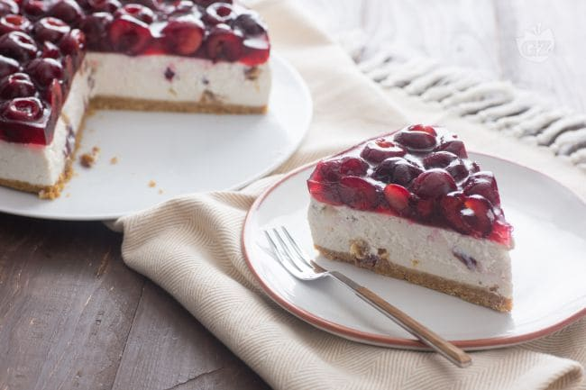

Ricette Lasagne - Le ricette di GialloZafferano Raccolta di ricette facili per primi piatti, secondi, dolci e dessert su Mangiare Bene. Ricette regiornali o internazionali, ricette per bambini, e in più ogni settimana Marina propone un nuovo menù
Ricette di cucina - Le ricette della Cucina Imperfetta Ricette Pasta. PORTATE FILTRA. Spaghetti alla Carbonara. 970 4,2 La ricetta degli spaghetti alla carbonara è tipica del Lazio ed è apprezzata in tutto il mondo grazie alla sua semplicità, facilità e bontà! Facile 25 min Kcal 680 LEGGI RICETTA. Spaghetti all'Amatriciana. 359 ...
Casatiello Con le ricette di pasta ci si può davvero sbizzarrire in quanto dagli ingredienti di mare a quelli di terra la pasta è veramente abbinabile con qualsiasi tipo di sugo o condimento. La pasta può essere cotta in vari modi al forno, al tegamino, bollita e in alcuni casi persino alla piastra, ad ogni tipo la propria ricetta.
DMFood: ricette, menu di cucina e alimenti funzionali ... Tutte le ricette scritte della trasmissione La Prova del Cuoco con gli ingredienti, procedimento e video delle ricette più buone proposte da Anna Moroni, Sergio Barzetti, Luisanna Messeri e Natalia Cattelani
Le ricette di Marianna Pascarella su RicetteDalMondo.it Tante ricette di cucina con foto facili da preparare per chiunque .Le ricette del mio blog di cucina sono spiegate passo passo e le foto dei passaggi le rendono ancora pi facili da preparare.
Le ricette della Prova del Cuoco ed É sempre mezzogiorno Entra nella community, salva le tue ricette preferite e vota quelle che ti piacciono di più! Inserisci i tuoi dati. Nome e cognome. Username. Email. Password. Numero di telefono. Accetto i Termini di utilizzo di Chef in Camicia e confermo di aver letto la Informativa sulla privacy.
Ricette di cucina, community, libri di ricette e libri di ... Tutte le ricette di cucina di Dissapore: dagli antipasti ai dolci, primi e secondi piatti di carne, di pesce e vegetariani / vegani, passando per preparazioni di pasta, pizza e pane, scopri le migliori ricette divise per categoria.. Scopri idee per colazione, antipasti, primi e secondi piatti, contorni, dolci, ricette dal mondo, tantissime ricette facili da preparare per ogni occasione: pranzi ...
ricettedelcuore Cook è il mensile di cucina del Corriere della Sera. News, ricette, inchieste, personaggi e tante curiosità legate al mondo del cibo.
Pasta - Le ricette di GialloZafferano Buonissimo, ricette di cucina facili, veloci e spiegate passo passo. Nella sezione magazine trovi inoltre benessere, sagre, articoli di cucina e molto altro. Scopri Buonissimo.
Allacciate il grembiule!
2021.04.14 01:07

Crea sito LE MIE RICETTE ANTIPASTI PRIMI PIATTI Pasta Riso e Cereali Gnocchi Lasagne, cannelloni e altra pasta fresca Minestre, zuppe e Vellutate SECONDI PIATTI Carne Pollo Pesce Formaggi, Uova e verdure CONTORNI patate zucchine melanzane Altre verdure DOLCI Biscotti e Muffin creme e dolci al cucchiaio dolci vari TORTE Torte Soffici Ciambelloni Crostate Per le occasioni LIEVITATI LIEVITATI SALATI LIEVITATI DOLCI TORTE SALATE BEVANDE E LIQUORI RICETTE BASE base dolci base salate GUIDE UTILI RICETTARI SPECIALI TUTTI GLI SPECIALI MENU SETTIMANALI INGREDIENTI EPIFANIA SAN VALENTINO CARNEVALE PASQUA ESTATE HALLOWEEN NATALE MENU DI NATALE FACILE ANTIPASTI DI NATALE ANTIPASTI FREDDI NATALIZI PRIMI PIATTI DI NATALE SECONDI PIATTI DI NATALE CONTORNI DI NATALE DOLCI DI NATALE DA REGALARE DOLCI DI NATALE FACILI E VELOCI BISCOTTI DI NATALE CAPODANNO CENONE DI CAPODANNO ANTIPASTI DI CAPODANNO DOLCI DI CAPODANNO VELOCISSIMI TORTE DI NATALE o CAPODANNO SPECIALE DI PASQUA DOLCI DI PASQUA CHI SONO IN LIBRERIA IN TELEVISIONE NUOVO VOLTO DI GIALLOZAFFERANO INTERVISTE E …. VITA DA FOODBLOGGER CONTATTI MEDIA KIT STATISTICHE ALLACCIATE IL GREMBIULE LE RICETTE DEL GIORNO SUL TUO CELLULARE
ARTICOLI IMPERDIBILI
COME SCIOGLIERE I FORMAGGI
FORNO STATICO O VENTILATO
COME SOSTITUIRE IL LIEVITO PER DOLCI
COME SOSTITUIRE IL LIEVITO DI BIRRA
vedi tutti »
BISCOTTI YOGURT E PISTACCHI
Biscotti yogurt e pistacchi preparati con una pasta frolla senza burro con farina, uovo e yogurt....ai pistacchi ovviamente, il buonissimo, unico e goloso Yogurt Colato con Pistacchio dei miei amici Caseificio Val d'Aveto. Io adoro lo yogurt in generale ma…
INSALATA DI ASPARAGI
Insalata di asparagi freschi, facile, buonissima da preparare e ideale per un pranzo veloce e…
POLPETTE DI SPINACI
Polpette di spinaci un secondo piatto facilissimo da preparare, buonissimo che potete fare con gli…
COSA CUCINARE DAL 12 AL 18 APRILE
COSA CUCINARE DAL 12 AL 18 APRILE 7 ricette per primi piatti, 7 ricette per…
PIZZA DI PASTA SFOGLIA
Pizza di pasta sfoglia una ricetta sfiziosa e facilissima ideale per la voglia di pizza…
BUDINO CON CIOCCOLATO AL LATTE
Budino con cioccolato al latte avanzato dalle uova di Pasqua ma ovviamente anche con il cioccolato al latte normale se ne avete e non siete nelle giornata post Pasqua. Questo budino è preparato con la ricetta classica del budino al…
TORTA TENERINA CON CIOCCOLATO AL LATTE
Torta tenerina con cioccolato al latte delle uova di Pasqua una torta facilissima da preparare,…
SALAME DI COLOMBA
Salame di colomba e cioccolato un dolce facilissimo e veloce da preparare, senza cottura, ideale…
CIAMBELLONE CON CIOCCOLATO AL LATTE
Ciambellone con cioccolato al latte morbidissimo, facile da preparare, senza burro e perfetto anche per…
PASTA CON LE FAVE
Pasta con le fave un primo piatto primaverile delicato e buonissimo preparato ovviamente con le…
Navigazione articoli
1 2 … 325
Sui Social
Cerca una ricetta
Cerca la categoria
Instagram
Facebook
Allacciate il grembiule! Vuoi abilitare le notifiche?
Vuoi rimanere aggiornato sulle ricette?
Attendi…
No, grazie Si, attiva
Tema Seamless Altervista René , sviluppato da Altervista
Apri un sito e guadagna con Altervista - Disclaimer - Segnala abuso - Notifiche Push - Privacy Policy - Personalizza tracciamento pubblicitario
LE MIE RICETTE ANTIPASTI PRIMI PIATTI Pasta Riso e Cereali Gnocchi Lasagne, cannelloni e altra pasta fresca Minestre, zuppe e Vellutate SECONDI PIATTI Carne Pollo Pesce Formaggi, Uova e verdure CONTORNI patate zucchine melanzane Altre verdure DOLCI Biscotti e Muffin creme e dolci al cucchiaio dolci vari TORTE Torte Soffici Ciambelloni Crostate Per le occasioni LIEVITATI LIEVITATI SALATI LIEVITATI DOLCI TORTE SALATE BEVANDE E LIQUORI RICETTE BASE base dolci base salate GUIDE UTILI RICETTARI SPECIALI TUTTI GLI SPECIALI MENU SETTIMANALI INGREDIENTI EPIFANIA SAN VALENTINO CARNEVALE PASQUA ESTATE HALLOWEEN NATALE MENU DI NATALE FACILE ANTIPASTI DI NATALE ANTIPASTI FREDDI NATALIZI PRIMI PIATTI DI NATALE SECONDI PIATTI DI NATALE CONTORNI DI NATALE DOLCI DI NATALE DA REGALARE DOLCI DI NATALE FACILI E VELOCI BISCOTTI DI NATALE CAPODANNO CENONE DI CAPODANNO ANTIPASTI DI CAPODANNO DOLCI DI CAPODANNO VELOCISSIMI TORTE DI NATALE o CAPODANNO SPECIALE DI PASQUA DOLCI DI PASQUA CHI SONO IN LIBRERIA IN TELEVISIONE NUOVO VOLTO DI GIALLOZAFFERANO INTERVISTE E …. VITA DA FOODBLOGGER CONTATTI MEDIA KIT STATISTICHE ALLACCIATE IL GREMBIULE LE RICETTE DEL GIORNO SUL TUO CELLULARE